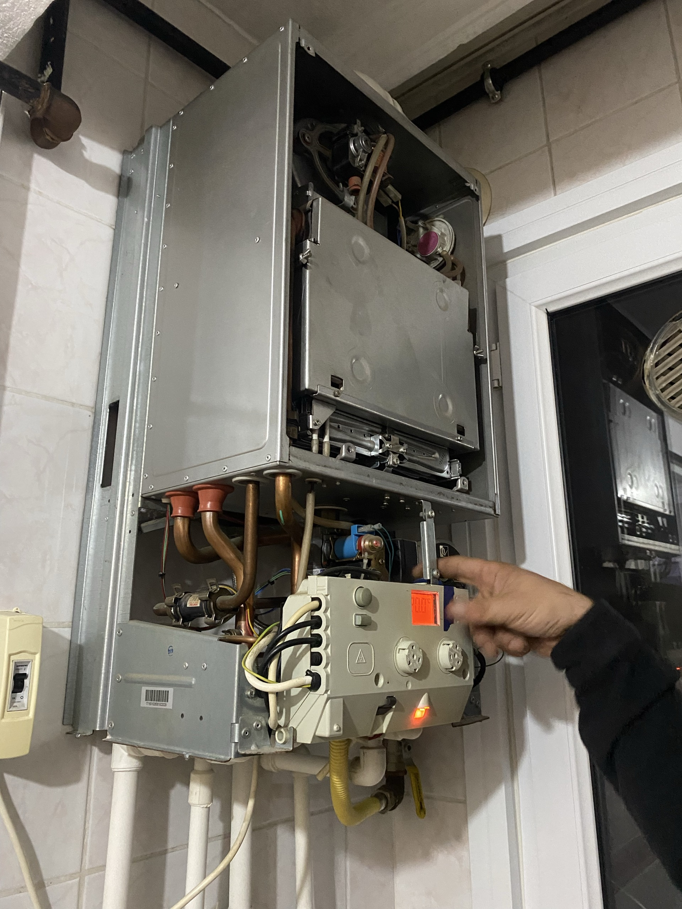

Viessmann cihazınız için
Vitodens veya diğer seri adıyla birlikte model numarasını iletin. Kodlar farklı cihaz nesillerinde farklılaşabilir.
Modelinize ve ihtiyacınıza uygun servis ile parça temin durumunu görüşmede netleştiriyoruz.
MARKADAN BAĞIMSIZ ÖZEL SERVİS
Viessmann cihazlar için Pendik ve çevresinde bağımsız bakım ve onarım desteği. 1 yıl onarım garantisi; model bazlı değerlendirme.

ŞEFFAF HİZMET
Vitodens veya diğer seri adıyla birlikte model numarasını iletin. Kodlar farklı cihaz nesillerinde farklılaşabilir.
Modelinize ve ihtiyacınıza uygun servis ile parça temin durumunu görüşmede netleştiriyoruz.
Dr. Beyaz Eşya Servisi, Viessmann markasının yetkili servisi değildir. Üretici garantisi devam eden cihazlarda garanti koşulları için markanın resmî destek kanalıyla görüşebilirsiniz.
Bizim sunduğumuz 1 yıl onarım garantisi, tarafımızca yapılan işleme ilişkindir.
BAKIM & ONARIM
MARKA & MODEL
Hata açıklamaları cihaz serisine göre değişebilir. Kodu model bilgisiyle birlikte değerlendirin.
SERVİS SÜRECİ
Marka-model, belirti ve mahallenizi paylaşın. Telefonla bilgi almak için randevu oluşturmanız gerekmez.
Cihazı inceler, gerekli işlemi ve ücretini açıklarız. Onayınızla onarıma başlarız.
İşlem sonrası çalışma kontrolünü yapar, 1 yıl onarım garantisinin kapsamını açıklarız.
USTALIĞIMIZA GÜVENİYORUZ
30 yıllık meslek deneyimimizi özenli arıza tespiti, açık fiyat bilgilendirmesi ve garantili onarımla birleştiriyoruz. Yaptığımız onarımın arkasında duruyor, işlem sonrasında da bize ulaşabilmenizi önemsiyoruz.
Onarımlarımız 1 yıl garantilidir. Yapılacak işleme ilişkin kapsamı ve koşulları servis sırasında açıklıyoruz. Bu garanti, cihazın üretici garantisinden ayrıdır.
Markalardan bağımsız özel servisiz; yetkili servis olduğumuz iddiasında bulunmuyoruz.
Garanti ve servis hakkında bize ulaşın ↗BİRLİKTE ÇÖZELİM
Cihazınızı ve yaşadığınız sorunu anlatın; uygun servis zamanını birlikte belirleyelim.